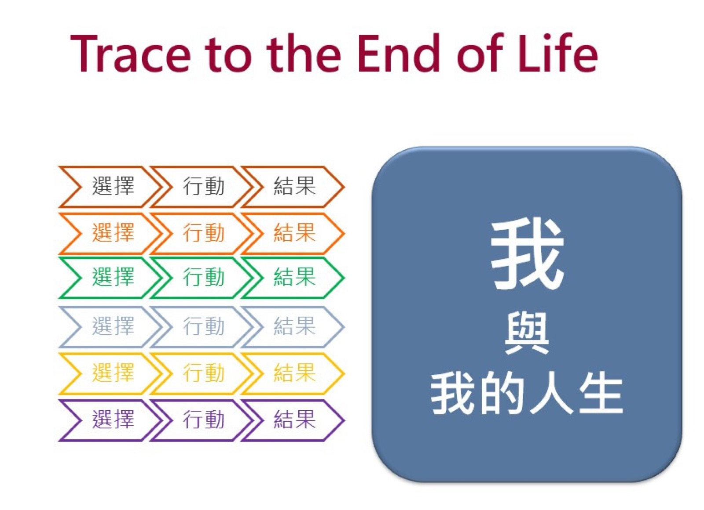

靈性修養
人應如何活出？——當我們知道了該怎麼活，卻發現「我做不到」。
今天的地圖：四段路
你們不是靈修的初學者。從啟航工作坊、農禪寺，到一年半的小組陪伴與靈修筆記——今天，我們把這一路收攏，再往更深處走一段。
- 壹 回到自己 在談學生之前，先回到老師自己的內在風景
- 貳 命名爭戰 把「我做不到」說準——解剖人性的軟弱
- 參 內在戰場與修練之道 從直視真相，到「你會怎麼修」
- 肆 託付與裝備 以陪伴與界線，把靈性交付給學生
＊全程以探討、案例與你自己的生命經驗推進；真正的靈修操練，留給你已熟悉的導師小組。
回到自己
在談學生之前，先回到一個更近的人——你自己。你能把學生帶多深，取決於你願意誠實面對自己多深。
先承認一件事
好的教學，無法被化約為技術。
它源自教師的身分認同與內在的整全——我們教的，是我們之所是。
Parker J. Palmer，《教學的勇氣》（The Courage to Teach）
靈性修養不是一門「要教給學生的內容」，
它首先是老師存在的品質。所以今天，我們從自己開始。
先複習：我們一路學過的
今天不是再上一次靈修入門。你早已擁有一整套語言與經驗——我們先快速複習四件最重要的，把它收攏成「一張靈性地圖」，再往下挖。
- 一、靈性修養是什麼——靈性、靈性健康，與「操則存，捨則亡」
- 二、靈修六原則——一年半來你日日操練的那六句
- 三、它與五大素養的關係——靈性修養為什麼是「樞紐」
- 四、日常生活中的操練——早晚課、境界現前、靈修筆記
複習① 靈性修養，是什麼
靈性
人的「主體性」「我性」——統整我這個人、指揮身心，追求圓滿與至善的那種潛能。
靈性健康
靈魂的健康，是身體、心理、關係等全人健康的樞紐。
靈性修養
「操則存，捨則亡」——如同身體需要鍛鍊，靈性也需要持續操練才會顯現。
靈性修養是一場無止境的朝聖旅程——在行住坐臥的每一刻，透過覺察、選擇與行動，邁向圓滿。
複習② 靈修六原則
- 在每一個人身上，看見神、看見佛、看見人
- 第一個去愛、第一個去給
- 給人信心、給人希望、給人歡喜、給人方便
- 緩於發怒、敏於寬恕、勇於道歉、時時感恩
- 擇善固執、不變隨緣
- 誠意正心、戒慎恐懼
這六句，是你們一年半來在小組與靈修筆記裡，日日操練的功夫。
複習③ 它為什麼是「樞紐」
依五大核心素養的次序來看，靈性修養貫穿其中、居中為樞紐：
- 終極關懷（定方向）——靈性的覺醒，縮短人與終極理想的距離。
- 價值思辨（定道路）——靈性的反思，讓價值判斷更有深度。
- 靈性修養（給動力）——它是人通往人格統整與知行合一的途徑。
- 人學探索（基礎）——靈性的自覺，讓人深入「人是什麼」的殿堂。
- 哲學思考（方法）——靈性的覺察與反思，正是後設思考的核心。
所以，今天的靈性修養是這整週的中軸。
複習④ 日常生活中的操練
早課・晚課
晨起，默想六原則、立定一天的決心；睡前，省察今天——好的感恩、不好的悔改，再準備明天。飯前、睡前的簡短祈禱與默想亦然。
境界現前時
只用五官看事件，就容易被它役使；睜開靈性的眼睛，每一件外在的事，都可以是自我「靈修操練」或「神人互動」的時機。
還有你們一直在寫的靈修筆記——把生活中的事件與省思記下來，就是把好的選擇，一點一點寫進生命的迴路。
課前作業 → 換你們提問
課前，你重讀了自己一年半的靈修筆記，寫下〈我的靈性爭戰地圖〉。現在，分成六組，把各自的反思放在一起討論——
提出一個（或多個）你們這一組最想在班上深入討論的靈修課題。
可以是一個真實的困惑、掙扎，或一個想一起想清楚的問題。
等一下掃 QR，把你們的課題打上來；它們會成為今天接下來，我們一起深掘的題目。
各組掃碼，上傳想討論的靈修課題
六組各派一位掃自己的 QR，把全組討論出的靈修課題打上來（不只一題、可分多次送出），即時出現在投影幕上你們這一組的頁面。
連線狀態
第1組 · 想討論的靈修課題
第2組 · 想討論的靈修課題
第3組 · 想討論的靈修課題
第4組 · 想討論的靈修課題
第5組 · 想討論的靈修課題
第6組 · 想討論的靈修課題
命名爭戰，解剖軟弱
靈性掙扎不代表靈性失敗，相反的，這代表一個人很有靈性自覺。
這個部分，我們先學習對各種靈性掙扎命名。
面對掙扎的第一步：替它命名
你們剛把各自最在意的靈修課題說了出來。能精準說出「我卡在哪裡」，本身就是靈性覺察的運作——也是面對它的第一步。
接下來，我們用一張整全的「靈性掙扎地圖」，把這些課題安頓進來、看清楚它們的位置。
一般的靈性量表，談的都是靈性健康或不健康，而沒有正視靈性的掙扎與人性的幽暗。
靈性掙扎地圖：你卡在哪一種關係裡？
人的靈性，總在「關係」中展現；窮盡人的關係，正好是四個領域——掙扎，就發生在每一種關係裡。
我與自己
意義感的失落、無法自我接納或超越、內在不平靜、困在過去、明知該在意卻提不起勁。
我與他人
自私、嫉妒、易怒、記仇、冷漠、不同理；愛與連結的困難；難以寬恕、懺悔、和解。
我與物
被金錢與名利綑綁、貪求與比較、「役於物」而非役物、與自然失去連結。
我與超越者 有信仰者
終極信念的迷失、信仰的懷疑、對神的憤怒或被遺棄感、祈禱裡的枯竭。
還有一條貫穿四領域的跨領域掙扎：人格統整與知行合一——知道卻做不到。
領域架構：孫效智〈以生命教育為核心重構靈性健康理論〉（2025）——我／人／物／天＋跨領域。
古人，早就為這些軟弱命名了
不論有沒有宗教信仰，這些「心的染污」「靈魂的病灶」是每個人都有的——換成現代白話，你一定認得：
佛教 · 五毒心
| 貪 | 想要更多、買不停、貪求名利與地位 |
| 嗔 | 易怒、記仇、看不順眼就開砲 |
| 癡 | 看不清真相、被妄念與假訊息帶著走 |
| 慢 | 自我中心、瞧不起人、愛比較 |
| 疑 | 猜忌、不信任、無法交託 |
基督宗教 · 七罪宗
| 傲慢 | 以自我為中心、聽不進別人 |
| 嫉妒 | 見不得別人好、酸言酸語 |
| 憤怒 | 一點就爆、報復心強 |
| 懶惰 | 提不起勁、滑手機逃避（acedia） |
| 貪婪 | 對錢財權力永不滿足、囤積 |
| 迷色 | 放縱慾望、被感官牽著走 |
| 貪饕 | 飲食或感官享受無節制、成癮 |
它們不是用來定罪，而是一面鏡子——照出我們共同的軟弱。
最普遍的一條：知道，卻做不到
「我所願意的善，我不去行；
我所憎恨的惡，我反而去做……
我真是個可憐的人！」
保祿，《羅馬書》7:15、24（思高版）
這是貫穿所有領域的跨領域掙扎——人格統整與知行合一。王陽明說「知而不行，只是未知」。它有兩個根源：知之模糊，以及人性的幽暗與軟弱，拉扯著情感、慾望與理智背道而馳。
把你們的課題，放上地圖
回頭看你們剛投稿的靈修課題——它主要落在哪一個關係領域？（我／人／物／天，或那條貫穿一切的「知行不一」）
- 同一個課題，常常同時牽動好幾個領域——這很正常。
- 試著「精準命名」：不是「我最近不好」，而是「我卡在與物的貪求」「我卡在與他人的難以寬恕」。
- 命名得越準，越知道可以從哪裡下手。
命名，不是承認失敗
「只談『健康』的靈性理論，很難安頓人性的黑暗與軟弱；靈性修養則直面這些挑戰，並將其視為靈性成長不可或缺的部分。」
孫效智〈以生命教育為核心重構靈性健康理論〉（2025）
- 掙扎 ≠ 失敗：能覺察、能命名自己的幽暗，正是靈性「覺性」在運作、是邁向人格統整的起點。
- 你不孤單：五毒、七罪跨越文明平行存在——這是全人類共同的功課。
- 掙扎可以轉化：接納而不姑息；「念起即覺，覺之即無」——下一頁我們看，這些毒與罪如何轉成智慧與美德。
而且，掙扎可以「轉化」
這些軟弱不是要消滅、也不是用來定罪——同一股能量，看穿並修養之後，能轉成智慧與美德。
五毒 → 五智
煩惱即菩提：每一毒看穿後，顯為一種智慧
| 貪 | → 妙觀察智（善巧明辨） |
| 嗔 | → 大圓鏡智（清明照見） |
| 癡 | → 法界體性智（體悟實相） |
| 慢 | → 平等性智（平等無分別） |
| 疑 | → 成所作智（成事利他） |
依密教五方佛「轉識成智」體系
七罪宗 → 七美德
| 傲慢 | → 謙遜 |
| 嫉妒 | → 仁愛 |
| 憤怒 | → 忍耐 |
| 懶惰 | → 勤勉 |
| 貪婪 | → 慷慨 |
| 迷色 | → 貞潔 |
| 貪饕 | → 節制 |
輪到你：為自己的靈性掙扎命一個名
掃 QR，把此刻你最想面對的那個靈性掙扎，用 1–3 個關鍵詞打上來。
連線狀態
內在戰場與修練之道
先直視內在戰場的真相，再問「你會怎麼修」，最後一起收攏出可以帶走的靈修之道。
選擇是一座冰山
念頭「進門」那一瞬——是選擇這座冰山水面下的一個悸動。但從起心動念到真正拍板，水面下還藏著一整座「選擇」的冰山。看懂它，才能在內在戰場「從頭到尾」保持覺醒。
選擇現象學——探究人的選擇，瞭解其性質、背後因素與歷程的學問。為什麼值得探究？因為「選擇形塑我，也形塑我的人生」。
（孟子：「學問之道無他，求其放心而已矣」；曾子：「吾日三省吾身」。）
選擇現象學：追到人生盡頭（Trace to the End）

先往前看：一個個「選擇→行動→結果」不斷累積，最終形塑「我，與我的人生」。
今天一個小選擇看似微不足道；但無數選擇串起來，會一路延伸、影響到人生的盡頭——這就是為什麼，選擇值得我們認真對待。
選擇現象學：追溯選擇根源（Trace to the Root）

再往內看：從表面的「選擇」，一層一層追本溯源——價值 → 人生觀 → 終極信念／理想 → 最深的理性與非理性因素的靈性爭戰。
最深處，是理性與非理性因素之間的靈性爭戰：靈性與覺性代表朝向終極信念與理想的理性因素，情緒、五毒心、七罪宗等則代表非理性因素。靈性（或覺性）是否以及如何起作用，將決定非理性因素的影響，因此左右一個人的選擇。
覺察心法：守在念頭的門口
一個壞念頭冒出來，並不等於你犯了錯——它只是「來敲門」。真正決定好壞的，是你怎麼接待它。
之前，我們學著為既有的靈性掙扎命名；
現在更早一步——趁念頭還在門口、還沒在心裡扎根長成掙扎，
就先認出它、叫出它的名字。
這份守望的功夫，靈修傳統稱為 νῆψις（nepsis）——我們給它一個好記的名字：「覺察心法」。它是一門看顧內心、守望念頭的學問：時時保持清醒，在念頭剛起的那一刻就認出它。這是一切內在修養的地基。
名詞小註｜這是基督宗教「沙漠教父」（三、四世紀退隱埃及曠野的隱修者）的洞見。厄瓦格力烏（Evagrius，約 345–399）最早把這些擾人的念頭（希臘文 λογισμοί／logismoi，即「念頭」）整理成「八種惡念」，日後成為西方「七罪宗」的前身。
當下三問：吾日三省吾身
一問比一問深——像曾子「三省吾身」，一層層把我們划向生命的深處。
潛下去，再浮上來：全程的覺醒
「當下三問」引領我們一層一層划向生命深處——潛到底，再帶著答案浮回生活：
- 當下反思 我為何會做這個選擇？（反思選擇背後的因素）
- 自我覺察 做出這選擇的我，是一個怎樣的人？
- 人生願景 我希望成為怎樣的人、過怎樣的人生？
- 終極關懷 什麼，是值得我活出的人生意義？
門口的 νῆψις（守住起心動念）＋ 看懂整座冰山（潛到底的覺察）＝ 內在靈性戰場「從頭到尾」的覺醒。它最終接上生命教育的人生三問：為何而活、如何而活、如何知行合一。
換你來：為來敲門的壞念頭命名
分六組討論：用剛學的「覺察心法」，挑出最困擾你、或最想一起討論的那個念頭——它可能還在門口敲門，也可能早已進門住下。掃 QR，用 1–3 個字為它命名。
連線狀態
這場靈性的戰役，你怎麼打？
透過「覺察心法」，說說看——你最想討論的，是哪一個念頭？
- 一個念頭一旦盤據心頭、成了習性，會走向兩條路：要嘛把人拖成某種靈性上不好的人格；要嘛，若你持續對它保持覺察，它就成為你難以去除、必須長期奮戰的靈性掙扎。
- 你有沒有什麼好的靈修方法，讓自己在這場戰役中慢慢致勝？
- 從自己失敗的經驗裡，你又學到了什麼？
討論後，各組掃碼把重點上傳。
各組掃碼，上傳你們的討論
六組各派一位掃自己的 QR，把全組討論的重點打上來（可分多次送出），即時出現在投影幕上你們這一組的頁面。
連線狀態
第1組 · 討論與修法
第2組 · 討論與修法
第3組 · 討論與修法
第4組 · 討論與修法
第5組 · 討論與修法
第6組 · 討論與修法
心猿意馬：修行，沒有捷徑
師徒四人，其實是一個人修行的四種內在力量——
- 孫悟空心思意念飄忽不定，很難安住。
- 豬八戒慾望，被寬容的慾望。
- 沙和尚理性與邏輯。
- 白龍馬前往西方取經的堅定意志。
修行沒有捷徑：靠堅定意志，馱著那顆難安的心，一步步安頓慾望與理智。
而萬惡之首，最不像「惡」
最危險的軟弱，是驕傲（拉丁文 superbia）。它不是自信、也不是能力強——而是悄悄把「我」放到中心與最高位：我最重要、我說了算、我不會錯。因為它偽裝成「我對」「我行」，所以最難被自己看見。
它是「一切的根」
不是先犯了某件壞事，而是那顆「我不能錯、我最重要」的心——底下才長出貪求、易怒、不肯認錯與道歉。拔掉這個根，很多毛病會一起鬆動。
多瑪斯・阿奎那：驕傲是眾罪之始
連做好事也會栽
一個人真心行善，卻可能因「我在做對的事」而漸漸自以為義、聽不進勸、踩過別人。判準是——好的開始，混亂的中段，惡的結果。
依納爵《神操》辨別內心動向的智慧
最需要警覺的，往往不是明顯的誘惑，而是那份「以為自己站在對的一邊」的篤定。
好人，是怎麼崩壞的
道德的崩壞，多半不是因為一顆邪惡的心，而是因為——思考的停止，加上一個沒有人問責的處境。
情境的力量
在一個錯誤的系統與角色裡，尋常的好人會一步步做出自己本不願意的事。知道情境有這種力量，你才抵抗得了它。
Zimbardo《路西法效應》（2007）
惡的平庸性
艾希曼不是怪物，是一個停止思考的普通人。惡的產生，不需要邪惡，只需要不再追問。
Hannah Arendt（1963）
這不是替誰免責——而是「自知」的一部分：我也活在各種系統裡，它們正在塑造我的判斷。
黑夜，是通道不是終點
當祈禱不再甜蜜、神好像不在了——許多人以為自己退步了。但十字聖若望說：那可能正是被邀請，走進更成熟的信德。德蕾莎修女走過將近五十年的「心靈黑夜」，外表服事最豐盛，內心卻久久感受不到神的臨在。
感官的黑夜
靈修的「甜美感」被撤走。不是失去信仰，是信仰正在斷奶、長大。
靈魂的黑夜
更深的淨化，連理性上的確信也被動搖——通往純粹信德之前的隧道。
靈性的枯竭，不代表靈性的退步——這是給我們、也是給學生，最有深度的安慰。
十字聖若望《靈魂的黑夜》；Brian Kolodiejchuk 編《Mother Teresa: Come Be My Light》（2007）
真相之後，是修養
這些掙扎不是要消滅，也不是用來定罪——同一股能量，看穿並修養之後，能轉成智慧與美德（還記得「五毒化五智、七罪對七美德」嗎）。下面按四個關係領域，各給幾個可操練的法門。
這些方法跨越宗教與心理學傳統，可彼此補充——擇你相應的，帶回小組慢慢練。不是懂了就會，是練了才能。
法門整理自：依納爵《神操》、本篤會傳統、佛教禪修、Worthington／Rosenberg／Berkeley Greater Good 等實證研究，及孫效智〈以生命教育為核心重構靈性健康理論〉（2025）。
① 我與自己：安頓那顆停不下來的心
對治：知行不一、提不起勁（acedia）、情緒淹沒、難以自我接納。
意識省察 Examen
每天回望這一日：天主在哪裡臨在、我往哪裡偏離。求光→感恩重溫→留意情緒→揀一事對話→迎向明天。
依納爵／耶穌會
正念呼吸・數息
把心錨在呼吸上，吸呼數「一」到「十」；念起即覺、輕輕拉回，不自責。現在就試 30 秒。
安那般那念（MN 118）
自我疏離
情緒翻湧時，把「我怎麼這麼糟」換成第三人稱：「（你的名字）現在很挫折，因為…他下一步可以怎麼做？」
Kross & Moser 實證
② 我與他人：接住情緒，不接收垃圾
對治：易怒、記仇、嫉妒、難寬恕。「生命的 90% 在於你如何看待事情。」
- REACH 寬恕回想→同理→把寬恕當禮物送出→立志→守住。（Worthington）
- 慈心觀祝福句由己及人，連難相處的人也包進來。（Metta）
- 非暴力溝通觀察→感受→需要→請求，不指責。（Rosenberg）
③ 我與物：鬆開被名利綁住的手
對治：被金錢名利綑綁、貪求與比較、「役於物」、與自然失去連結。
敬畏漫步 Awe Walk
散步時刻意尋找「大於自己」的事物——天空、大樹、光影、廣闊。自我縮小，煩惱也縮小。體驗敬畏時，大腦「自我中心」的網絡活化會明顯下降——自我的縮小有了神經科學的語言。
UC Berkeley／UCSF 實證；Keltner《Awe》
三件好事・感恩記錄
每天（或每週三次）寫下三件具體的好事，並簡述「為何發生／我的角色」。盤點已擁有的好，貪求的心自然鬆開。
Seligman；Emmons & McCullough 實證
④ 我與超越者：在枯竭裡，仍然守住
對治：信仰枯竭、神枯、想放棄靈修。以謙卑感恩開啟一天。
- 神枯的分辨神枯中不更改神慰時所立的決定，並反向施力——多祈禱、多省察，耐心等候。（依納爵《神操》）
- 避靜・退省暫離喧囂，騰出整段靜默讓天主說話，結束時記下一個帶回生活的決定。
⑤ 貫穿一切：把「知道」練成「做到」
對治那條貫穿所有領域的掙扎——知道，卻做不到。習慣養成的科學，可以接上千年的功夫論。
「若—則」執行意向
把「我想更耐心」寫成「若晚餐後，則做 5 分鐘省察」——把善行綁進具體情境，讓它自動化，善行變成「即時習慣」。
Gollwitzer 行為科學實證
致中和・慎獨
不是壓抑情緒，而是讓它「發而中節」；獨處無人看見時，也覺察起心動念、守住內在的平正。
《中庸》
「操則存，捨則亡」——不是懂了就會，是練了才能，一步一步走在知與行之間。
託付與裝備
最後，把目光轉向學生。我們不是因為靈性完美才能陪伴——而是因為我們也誠實面對過自己，仍在前行的路上。
陪伴，是款待不是修理
真正的陪伴者，不是醫生，也不是父母，
而是一位「款待的主人」——
以接待，而非修理，迎接對方。
陪伴的力量，不是來自你比學生更完美，而是來自你的誠實、謙卑與同理——你願意停下來，與他同行一段。
盧雲（Henri Nouwen）的陪伴神學——以「款待」而非「修理」迎接他人
你要陪伴的，是這樣一代人
至極度憂鬱
不告訴任何人
十大死因第二位
他們獨處的能力正在流失，轉向手機與短影音尋找靈性的指引。所以今天的生命教育老師，比以往任何一代都更被需要。
兒福聯盟 2023；衛福部統計（引用前頁碼待核）
陪伴，不是拯救——三條界線
① 開門，不塞答案
用「根本問題」鬆土，開啟學生的靈性自覺——而不是把自己的信仰答案塞給他。
② 辨識何時轉介
陪伴不等於承接學生所有的心理重量。看見界線，知道何時交給輔導室、專業與醫療。
③ 不造成依附
不利用靈性的權威，製造情感依附或不當的關係。陪伴，是讓他更自由，不是更黏你。
這不是「燃燒自己照亮別人」的口號，而是冷靜、專業、保護雙方的分寸。
而且，不必擔心被說「傳教」
把「靈性」帶進公立校園，可以既深刻、又不淪為灌輸或心靈雞湯。先學會分辨這三者：
| 它在做什麼 | 分辨線 | |
|---|---|---|
| 靈性素養 | 培育自我反思、敬畏與驚奇、對意義的探問 | 開放問題，陪他自己找 |
| 靈性灌輸 | 把特定信仰的結論當答案要求接受 | 先有結論，要他照收 |
| 心靈雞湯 | 用一時的感動代替真實的思考 | 只給感覺，不給深度 |
問自己一句：我未來的課，會落在哪一欄？
帶一份承諾回去
不是寫一段感想，而是寫一個承諾——
- 我會以怎樣的姿態，陪伴我的學生？
- 我會守住哪些界線？
- 我會用怎樣的提問，陪他面對自己的靈性爭戰？
這份宣言，可以帶回你的靈修小組，與導師繼續走下去。
為什麼，靈性修養是樞紐
走到這裡你會發現：靈性修養不是五大素養旁邊的一項，而是貫穿其中的水分與養分。
- 沒有靈性的覺察，終極關懷難以扎根；
- 沒有靈性的反思，價值思辨缺乏深度；
- 靈性的自覺，正是哲學思考（後設思考）的核心；
- 靈性的眼睛，讓人深入人學探索的殿堂。
這也是為什麼，今天是這整週的「中軸」。
當我們誠實、謙卑地面對自己，就能陪學生走過他們的靈性爭戰。
彩蛋·主題曲〈知與行之間〉
〔主歌一〕
我知道 該對她溫柔一點
話到嘴邊 卻還是變成了刀
我知道 該放下昨天那口氣
可手一鬆 它又回到我心上
〔導歌〕
知道，到做到
中間隔著 一整條河
河的這一邊 是我說過的道理
河的那一邊 是我活出的樣子
〔副歌〕
操則存，捨則亡
這顆心 一鬆手 就溜走
不是懂了就會 是練了才能
從心所欲 而不踰矩
那是一生的功夫 一步一步
走在知與行之間
〔主歌二〕
慎獨——沒有人看見的時候
我是不是 還是我說的那個我
靜下來 聽見念頭升起又消失
原來覺察 就是回家的路
〔尾聲｜輕誦〕
吸氣，我知道我在吸氣
吐氣，我知道我在吐氣
此刻——
知，與行，慢慢 合而為一
〈知與行之間〉——把「操則存，捨則亡」的功夫論唱出來；間奏只留呼吸與缽聲。